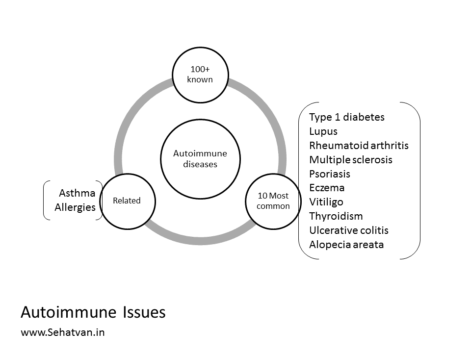
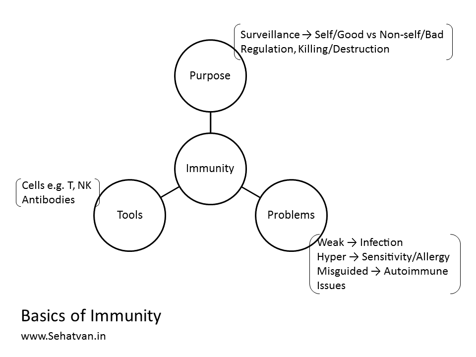
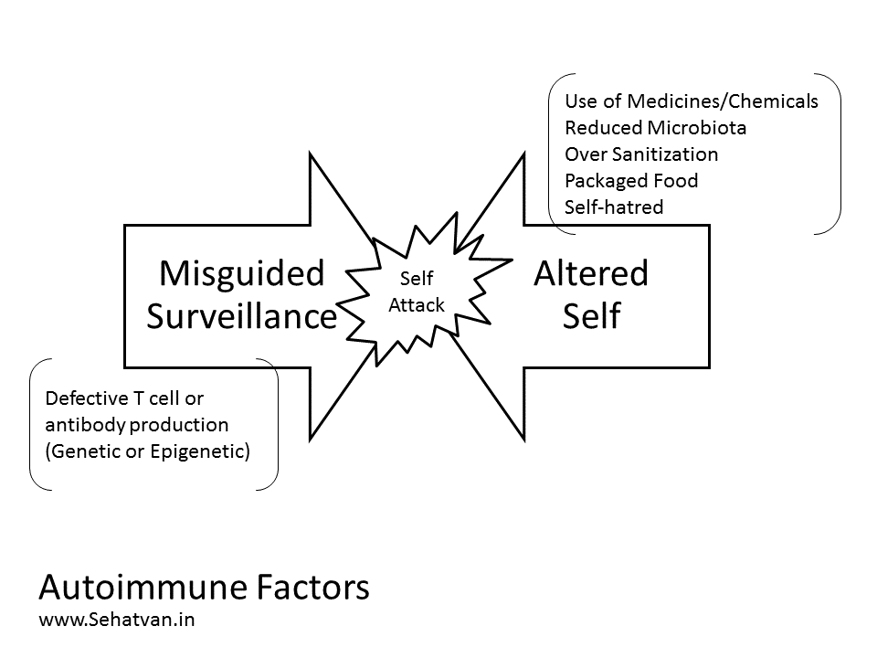
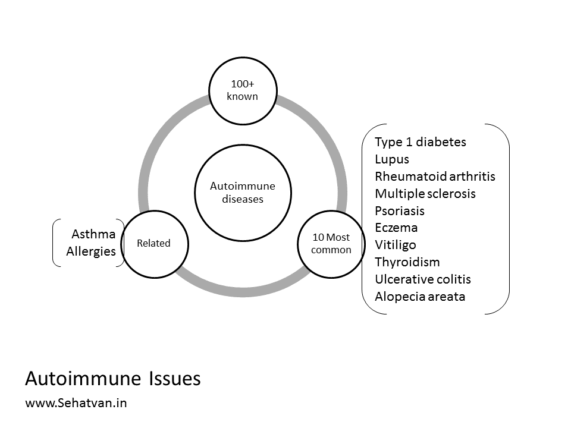
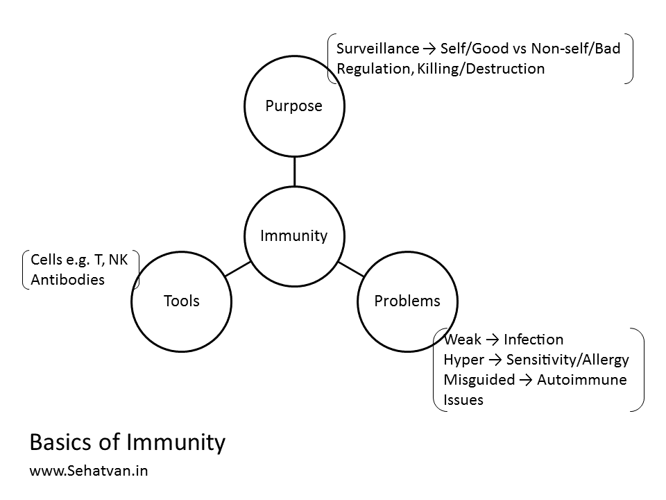
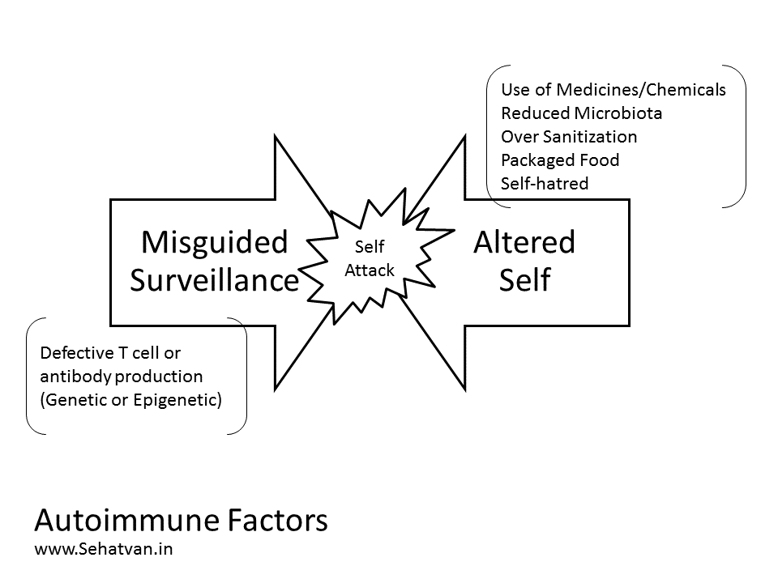
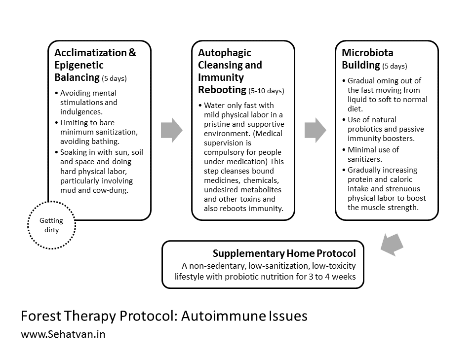
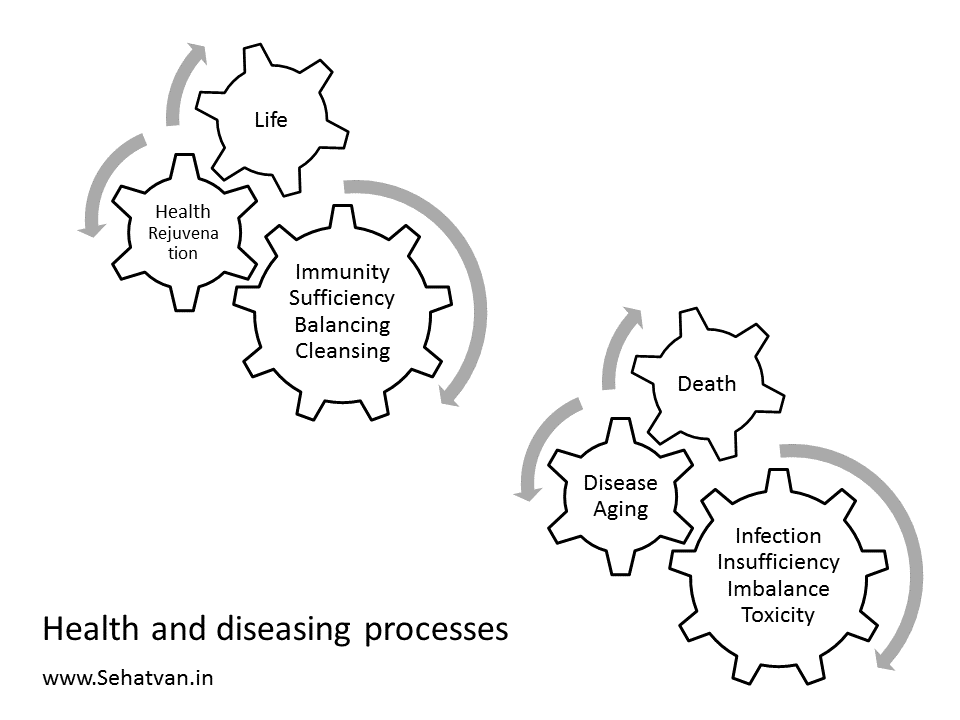
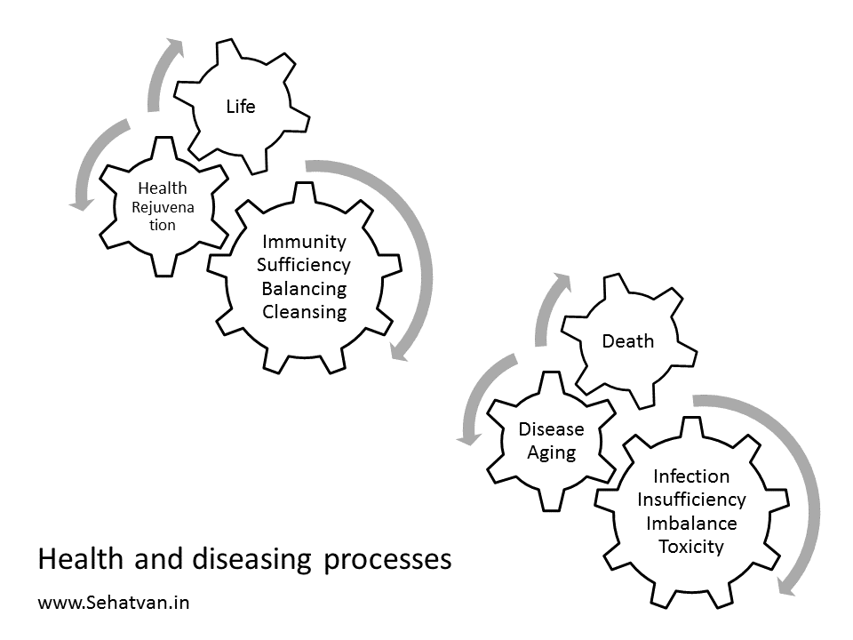
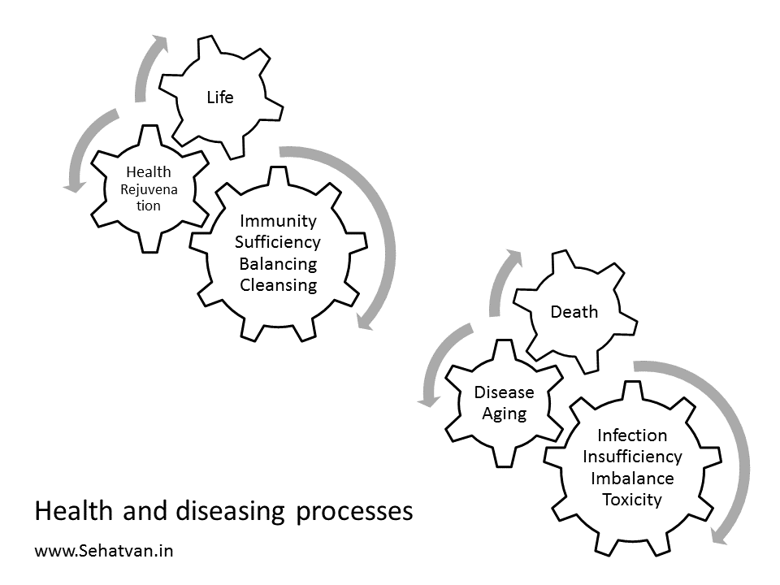

Take health, drop diseases
Namaste!
 Every living being is capable of self-recovery. Lifestyle issues weaken our health recover
capacity and our health-span.
Health-span is the period in a person's life without major illnesses.
Sehatvan Aashram is carefully designed to reboot mental and physical fitness.
Every living being is capable of self-recovery. Lifestyle issues weaken our health recover
capacity and our health-span.
Health-span is the period in a person's life without major illnesses.
Sehatvan Aashram is carefully designed to reboot mental and physical fitness.
Forest Therapy Module:
Autoimmune Health
Recommended Duration:
A) At Sehatvan (Forest Protocol):
15 to 20 days
+
B) Home Protocol:
3 to 4 weeks (1 or 2 followup visits/calls)
Fee Contribution:
Indian Participants:
Rs 20,000
International Participants:
USD 350
Refund Policy:
Cancellation (only upto first 2 days of participation)
Rs. 5000/person is deducted and the balance is refunded.
Change of date:
subject to availability and updated fees.
Cancellation (only upto first 2 days of participation)
Rs. 5000/person is deducted and the balance is refunded.
Change of date:
subject to availability and updated fees.
Know More
What are Autoimmune Issues
Therapeutic Protocol
Immune system is our body’s defense mechanism and its role is to take care of
external and internal
threats; thereby, it is designed and trained to handle invading pathogens at one hand, and hostile
body cells (like cancer) at the other. Persons with weak immunity are prone to
having infections,
those with hyper-immunity having sensitivities; and therefore, a proper balancing
and modulation is
needed.
Perhaps, this module of forest therapy deals with another dimension of the immune issue – autoimmune diseases. Autoimmune diseases are the situation when immune system starts attacking body’s own functional cells thereby either altogether destroying the organ or altering its growth and functionality. There are over 100 autoimmune diseases existing, the most common among them are: Type 1 Diabetes, Lupus, Rheumatoid arthritis, Multiple sclerosis, Psoriasis, Eczema, Vitiligo, Thyroidism, Ulcerative colitis, Alopecia areata etc. Allergy and Asthmas also have autoimmune connection. In a nutshell autoimmune diseases are like your own security guard attacking you.
 Considering the basics of the immunity first: immune system functions through mainly two tools – immune cells, such as T cells and natural killer cells, and a range of antigen specific antibodies. The task of immune system could primarily be divided in two parts – 1) surveillance, and 2) regulation. Surveillance is quite a challenging task whereby T cells check each and every cell (also cell components and products) in the body for its nationality and loyalty/goodness, anything foreign or having turned unfaithful is alerted for and handled accordingly. Autoimmune diseases mainly occur due to some problem in this surveillance – either the surveying cells having become mis-educated or the surveyed ones having altered in some way to look suspicious or harmful. Current approach to handle the situation is by administering immunosuppressive agents so that the whole immune system is kind of blinded or cornered. However, this cannot be the solutions, and it is for this reason why all autoimmune diseases are medically incurable.

In this module we attempt to 1) reverse the alterations in host cells and, 2) reeducate, reboot or modulate the immune system. The alteration in the host is usually caused by bound medicines, chemicals, undesired metabolites or toxins and autophagic detox is a great way to getting rid of most of these alterations, and thereby, returning back to the pristine self. Autophagy also reboots and reeducates the immune system. Prior to autophagy a five days epigenetic balancing protocol helps in regulating the gene switching. Self-hatred and depression are also known to have linkage with autoimmunity, because when this - destroying to one self – keeps going in the mind for too long, the immunity starts obeying the signal.
There is one more dimension to this, and that perhaps could be the most important cause of autoimmune issues – we are a bit too sanitized and our immune system doesn’t have enough engagement outside; hence, it turns more to inside, like army of a country having no external threat. Enhancing the external threat a little bit by enriching the microbiota, by cutting down on sanitization, and once in a while having minor injuries, bruises is likely to make the whole immune system more extrovert, and thereby, reduce its hyper inside focus. Tense borders boost national loyalty. Also, our microbiota is like our closest or internal forests and a rich forest has a balanced ecosystem.

Perhaps, this module of forest therapy deals with another dimension of the immune issue – autoimmune diseases. Autoimmune diseases are the situation when immune system starts attacking body’s own functional cells thereby either altogether destroying the organ or altering its growth and functionality. There are over 100 autoimmune diseases existing, the most common among them are: Type 1 Diabetes, Lupus, Rheumatoid arthritis, Multiple sclerosis, Psoriasis, Eczema, Vitiligo, Thyroidism, Ulcerative colitis, Alopecia areata etc. Allergy and Asthmas also have autoimmune connection. In a nutshell autoimmune diseases are like your own security guard attacking you.
 Considering the basics of the immunity first: immune system functions through mainly two tools – immune cells, such as T cells and natural killer cells, and a range of antigen specific antibodies. The task of immune system could primarily be divided in two parts – 1) surveillance, and 2) regulation. Surveillance is quite a challenging task whereby T cells check each and every cell (also cell components and products) in the body for its nationality and loyalty/goodness, anything foreign or having turned unfaithful is alerted for and handled accordingly. Autoimmune diseases mainly occur due to some problem in this surveillance – either the surveying cells having become mis-educated or the surveyed ones having altered in some way to look suspicious or harmful. Current approach to handle the situation is by administering immunosuppressive agents so that the whole immune system is kind of blinded or cornered. However, this cannot be the solutions, and it is for this reason why all autoimmune diseases are medically incurable.

In this module we attempt to 1) reverse the alterations in host cells and, 2) reeducate, reboot or modulate the immune system. The alteration in the host is usually caused by bound medicines, chemicals, undesired metabolites or toxins and autophagic detox is a great way to getting rid of most of these alterations, and thereby, returning back to the pristine self. Autophagy also reboots and reeducates the immune system. Prior to autophagy a five days epigenetic balancing protocol helps in regulating the gene switching. Self-hatred and depression are also known to have linkage with autoimmunity, because when this - destroying to one self – keeps going in the mind for too long, the immunity starts obeying the signal.
There is one more dimension to this, and that perhaps could be the most important cause of autoimmune issues – we are a bit too sanitized and our immune system doesn’t have enough engagement outside; hence, it turns more to inside, like army of a country having no external threat. Enhancing the external threat a little bit by enriching the microbiota, by cutting down on sanitization, and once in a while having minor injuries, bruises is likely to make the whole immune system more extrovert, and thereby, reduce its hyper inside focus. Tense borders boost national loyalty. Also, our microbiota is like our closest or internal forests and a rich forest has a balanced ecosystem.

The protocol has 3 in-forest and 1 post-forest stages. It begins with acclimatization and epigenetic
balancing and then moves to autophagic cleansing and immunity rebooting, followed by microbiota
enhancing steps.
Supplementary Home Protocol
-
Acclimatization and Epigenetic Balancing (5 days):
Forest stay helps fine-tunes gene switching, and once gene-switching is fine-tuned most cell functions and antibody production become remarkably error-free. During this stage we also like people enhancing their connection with the nature; sanitization dramatically reduces our nature connection and most of us are actually over-sanitized. In this phase its recommended getting loose on hygiene – getting dirty, avoiding bathing, putting on unwashed clothes, and above all – not using any cleansing agent like soap, shampoo, hand wash etc. Lot of hard physical labor and sun exposure help reduce, self-hatred, if any. Cow-dung and mud are great antidepressant as well as probiotic. -
Autophagic cleansing and rejuvenation (5-10 days):
Water only fast for 5 or more days dramatically cleanses body by detoxing. In this phase virtually all the build-up of the bound medicines, bound chemicals, undesired metabolites and toxins is cleared away, thereby body becoming pure and clean, and hence, autoimmunity is reduced. Longer fasts are rejuvenative in nature and lead to rebooting the immunity and formation of new stem cells. This way the immune system also gets optimized from within. However, in autophagy mode people carrying large toxicities may feel varied uncomfortable detox symptoms, and hence, this step should be taken-up under a supportive and pristine environment only. Medical supervision is compulsory for people on medication. -
Microbiota Building (5 days):
Strong microbiota is the strongest and the most lasting protection against all diseases in general and autoimmune diseases in particular. After gradual eating restoration body is actively exposed so as to enrich its microbiota on the skin as well as inside the intestine. This is achieved by using fermented food, drinking raw water and keeping sanitation to bare minimum.

Subsequent to the forest components participants are given a tailor made home protocol, which primarily
aims at living a non-sedentary, low-sanitization, low-toxicity lifestyle with probiotic nutrition for 3
to 4 weeks. All kinds of packaged food and drinks must be avoided during this phase as package food
contains preservatives that destroy the intestinal microbiota.
Daily/ Hourly Protocols
Protocol for the first 10 days is standard for everyone and is available at www.sehatvan.in in the form
of a booklet. Subsequent protocols are tailor made to each individual’s needs and situations.
PRECAUTION
The protocol should be undertaken under medical supervision as people under medication may require
dosage adjustments. Also, those carrying toxicities may experience detox symptoms like vomiting,
diarrhea, skin rashes, body ache, fever etc during autophagy phase. Since Sehatvan is not a medical
institution, we recommend people coming here keeping in touch with their doctor. The effectiveness of
this protocol is not established in all autoimmune issue. Medical supervision is extremely must for
people suffering from T1 Diabetes and on insulin.
PRECAUTION
This protocol hasn’t been tested for all autoimmune situations and might remain ineffective in some.
Also, protocol’s multiple administration may require with some people.
Other Questions
What is Forest Therapy?
 This is a healing process based on strengthening and calming, cleansing and rejuvenating the
body. It
helps in
rebooting the self-recovery system and also facilitates reversing of diseases.

This is a healing process based on strengthening and calming, cleansing and rejuvenating the
body. It
helps in
rebooting the self-recovery system and also facilitates reversing of diseases.

This is a healing process based on strengthening and calming, cleansing and rejuvenating the
body. It
helps in
rebooting the self-recovery system and also facilitates reversing of diseases.

Who can do it?
This programme is suitable for healthy people as well as those suffering from diseases.
Healthy
people can benefit by increasing their stamina and health-span while people suffering from
ailments can reverse their diseases.
Who cannot do this?
Those who need constant medical attention, who have difficulty in walking and do not enjoy
doing
their own work.
Which diseases is the process helpful in?
Diabetes, BP(Hypertension), Heart issues, Stress, Thyroid, Obesity(weight-loss),
Cancer(early stage
& prevention), PCOD and other lifestyle and autoimmune diseases.
What is the procedure? How long does it take?
This process of Forest Therapy has been developed by health scientist Dr. Vipin Gupta and is
based on
CNA (Community-living, Nature and Autophagy) which can be done at Sehatvan. The duration
progresses
differently for everyone, based on your current health and healing ability.
About Dr. Vipin Gupta

A drug discovery scientist, he spent over two decades developing new medicines for various pharma companies in India, Europe and America. In 2011 he was invited by The Royal Swedish Academy of Sciences at Nobel Museum, Stockholm to represent Southeast Asia. He co-founded a research publishing company ‘Inventi’ in 2010 and a self-healing space ‘Sehatvan’ in 2016.
A drug discovery scientist, he spent over two decades developing new medicines for various pharma companies in India, Europe and America. In 2011 he was invited by The Royal Swedish Academy of Sciences at Nobel Museum, Stockholm to represent Southeast Asia. He co-founded a research publishing company ‘Inventi’ in 2010 and a self-healing space ‘Sehatvan’ in 2016.
‘Sahaj Sehat’ series carries the viewpoints of how body’s auto-repair capabilities can make use of medicines redundant in lifestyle diseases.